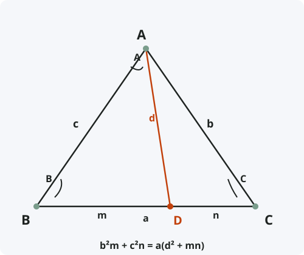

Теорема Стюарта
Формулировка
Если точка D лежит на стороне BC треугольника ABC и делит её на отрезки m = BD и n = DC, а d = AD — чевиана, то справедливо соотношение: b²m + c²n = a(d² + mn), где a = m + n.
Обозначения
Пусть дан треугольник ABC. На стороне BC выбрана точка D.
a = BC — сторона, разделённая точкой D
b = AC — сторона, противолежащая вершине B
c = AB — сторона, противолежащая вершине C
m = BD — отрезок от B до D
n = DC — отрезок от D до C
d = AD — чевиана, проведённая из вершины A к точке D
Тогда: b²m + c²n = a(d² + mn)

Доказательство
Теорема доказана.
Следствия из теоремы
- Формула длины медианы: если D — середина BC (m = n = a/2), то d² = (2b² + 2c² − a²) / 4.
- Формула длины биссектрисы: если AD — биссектриса (m/n = c/b), то d² = bc − mn.
- Формула длины высоты: подставляя m и n через проекции, можно вывести формулу высоты.
- Теорема Стюарта является обобщением многих метрических соотношений в треугольнике.
Примеры применения
Пример 1. В треугольнике ABC сторона a = 10, b = 7, c = 8. Точка D делит BC в отношении BD:DC = 2:3. Найдите длину чевианы AD.
Решение: m = 2/5·10 = 4, n = 3/5·10 = 6. По теореме Стюарта: 7²·4 + 8²·6 = 10(d² + 4·6).
49·4 + 64·6 = 196 + 384 = 580. 10(d² + 24) = 580 ⇒ d² + 24 = 58 ⇒ d² = 34 ⇒ d = √34 ≈ 5,83.
Пример 2. Найдите медиану к стороне a = 14, если b = 13, c = 15.
Решение: Для медианы m = n = a/2 = 7. По формуле: mₐ² = (2b² + 2c² − a²) / 4 = (2·169 + 2·225 − 196) / 4 = (338 + 450 − 196) / 4 = 592 / 4 = 148 ⇒ mₐ = √148 ≈ 12,17.
Историческая справка
Теорема названа в честь шотландского математика Мэттью Стюарта (Matthew Stewart, 1717–1785), который опубликовал её в 1746 году в работе «General Theorems of Considerable Use in the Higher Parts of Mathematics».
Однако некоторые историки математики считают, что эта теорема была известна ещё Архимеду (III век до н.э.), но не сохранилась в его трудах. Роберт Симсон, учитель Стюарта, также использовал похожие соотношения.
Теорема Стюарта стала важным инструментом в геометрии треугольника и используется для вывода многих других формул.
Интересные факты
- Теорему Стюарта иногда называют «теоремой Аполлония», хотя последняя является её частным случаем для медианы.
- С помощью теоремы Стюарта можно доказать теорему Чевы и многие другие классические теоремы.
- В англоязычной литературе теорему часто записывают в симметричной форме: man + dad = bmb + cnc (мнемоническое правило «man + dad = bmb + cnc»).
- Теорема Стюарта применима не только для внутренней точки на стороне, но и для точки на продолжении стороны (с учётом знаков отрезков).